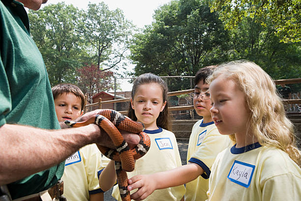
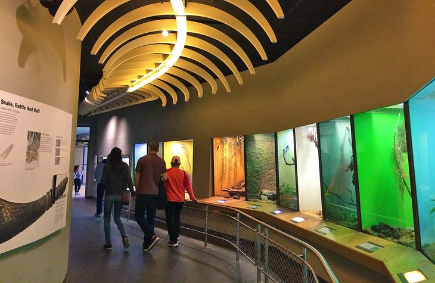

ASD Safe Spaces
A Resource Guide for the Autism Spectrum Disorder Community
© 2024 ASD Safe Spaces. All rights reserved.
About Us
We are website dedicated to advertising websites and locations that are “Safe and Autism friendly” places for adults and children with Autism to visit. This is a population that is often misunderstood and, for these reasons, often mistreated. Subscribe to our email services for monthly updates on events that are happening, locations to visit, and links on Autism friendly social events and dating services with ratings and comments from us.
Places to Go
New York City has many interesting and beautigful places to see and enjoy. We focus on places which are accepting of everyone and offer an Autism sensitive and friendly environment.
Things to do
We focus on things to do that do not overstimulate those who may be sensitive to their environment while providing an enjoyable and often eductional exprience.
People to meet
We rate and accept comments on “Safe and Autism friendly” services which provide social events. We will list movies, theaters, restaurants, and cafes which cater to an environmentally sensitive person. Some of these business employ people with Autism.